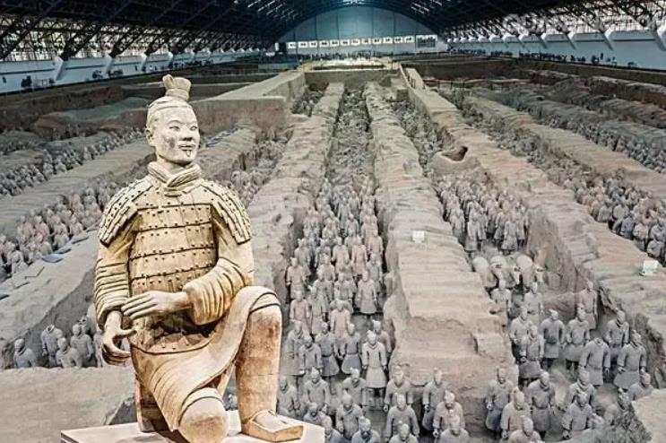
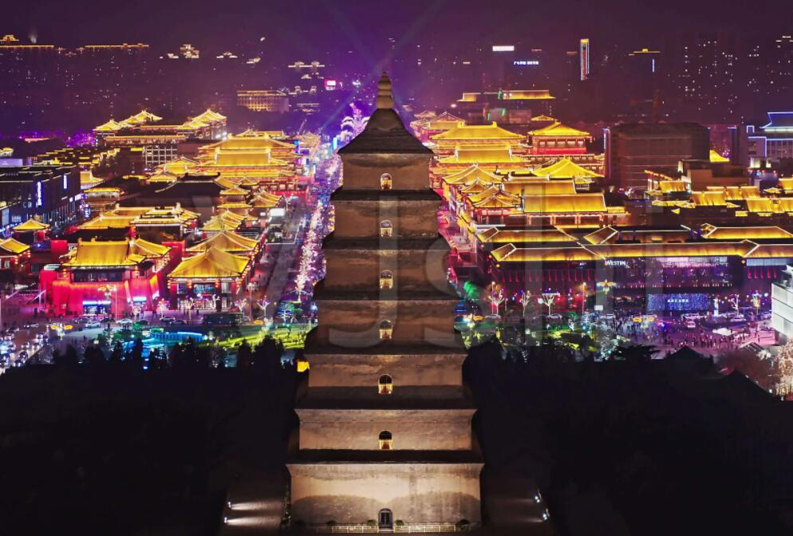
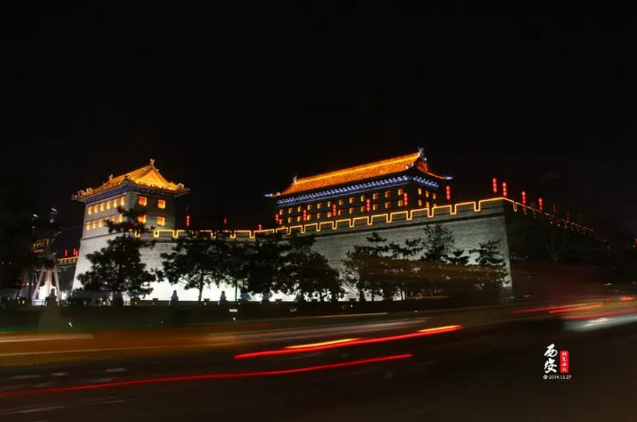
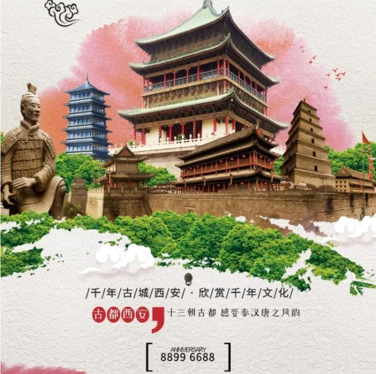
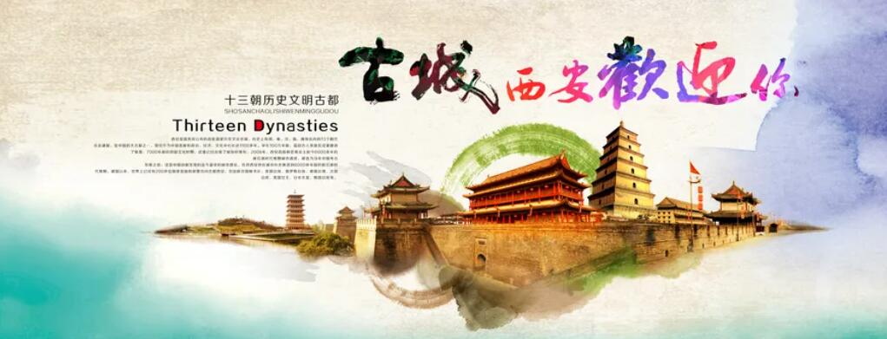

西安印象
十三朝古都，中国最古老的城市
发布时间：2022-09-10
本文摘要：自20世纪90年代以来，作为中国内陆地区特别是中西部地区经济复兴的一部分，西安市已重新成为中西部重要的文化、工业和教育中心，有研究开发、国家安全、中国空间探索等设施。西安著名景点：西安秦始皇兵马俑兵马俑是中国第一个皇帝秦始皇的兵马俑的集合体。
西安是陕西省的省会，位于中国的中心。它是中国最古老的城市之一，拥有超过3100年的历史。这座城市在明朝之前被称为长安。西安是中国四大古都之一，是中国历史上最重要的几个朝代周、秦、汉、隋和唐的都城。西安具有悠久的文化和历史底蕴。
秦始皇兵马俑
兵马俑是中国第一个皇帝秦始皇的兵马俑的集合体。它是在公元前210 - 209年与皇帝一起埋葬的一种丧葬形式，其目的是为了保护皇帝死后的生活，并确保他继续保持统治地位。
1961年3月4日，秦始皇陵被国务院公布为第一批全国重点文物保护单位。1974年3月，兵马俑被发现。1987年，秦始皇陵及兵马俑坑被联合国教科文组织批准列入《世界遗产名录》，被誉为“世界第八大奇迹”，先后有200多位外国元首和政府首脑参观访问，成为中国古代辉煌文明的一张金字名片，又被誉为世界十大古墓稀世珍宝之一。

图1 秦始皇兵马俑
大雁塔
大雁塔位于唐长安城晋昌坊（今陕西省西安市南）的大慈恩寺内，又名“慈恩寺塔”。唐永徽三年（652年），玄奘为保存由天竺经丝绸之路带回长安的经卷佛像主持修建了大雁塔，最初五层，后加盖至九层，再后层数和高度又有数次变更，最后固定为所看到的七层塔身，通高64.517米，底层边长25.5米。
大雁塔作为现存最早、规模最大的唐代四方楼阁式砖塔，是佛塔这种古印度佛寺的建筑形式随佛教传入中原地区，并融入华夏文化的典型物证，是凝聚了中国古代劳动人民智慧结晶的标志性建筑。

图2 西安大雁塔
西安城墙
西安明城墙位于陕西省西安市中心区，墙高12米，顶宽12—14米，底宽15—18米，轮廓呈封闭的长方形，周长13.74千米。城墙内人们习惯称为古城区，面积11.32平方千米，著名的西安钟鼓楼就位于古城区中心。1961年3月4日，西安城墙被国务院公布为第一批全国重点文物保护单位。

图3 西安城墙
西安城墙主城门有四座：长乐门（东门），永宁门（南门），安定门（西门），安远门（北门），这四座城门也是古城墙的原有城门。从民国开始为方便出入古城区，先后新辟了多座城门，至今西安城墙已有城门18座。

———— 热门搜索 ————
| 兵马俑 | 大雁塔 | 小雁塔 |
| 钟楼 | 大唐芙蓉园 | 鼓楼 |
| 华清池 | 大明宫 | 骊山 |

———— 西安话题 ————
- 西安十大热门旅游景点旅游攻略
- 文化新业态支撑有力复苏态势明显
- 西安十大热门旅游景点旅游攻略
- 文化新业态支撑有力复苏态势明显
- 西安十大热门旅游景点旅游攻略
- 文化新业态支撑有力复苏态势明显